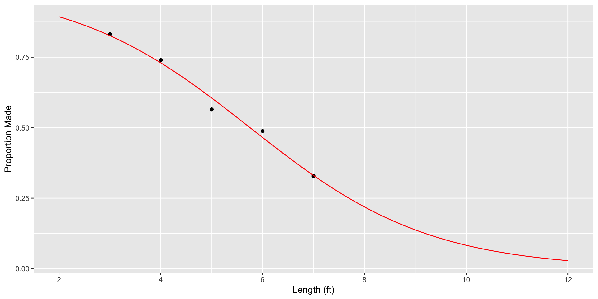

Call:
lm(formula = Sex ~ Hgt, data = Pulse)
Residuals:
Min 1Q Median 3Q Max
-0.90150 -0.20348 -0.00216 0.20574 0.80311
Coefficients:
Estimate Std. Error t value Pr(>|t|)
(Intercept) 7.343647 0.397563 18.47 <2e-16 ***
Hgt -0.100658 0.005817 -17.30 <2e-16 ***
---
Signif. codes: 0 '***' 0.001 '**' 0.01 '*' 0.05 '.' 0.1 ' ' 1
Residual standard error: 0.3305 on 230 degrees of freedom
Multiple R-squared: 0.5656, Adjusted R-squared: 0.5637
F-statistic: 299.5 on 1 and 230 DF, p-value: < 2.2e-16Section 9.1: Logistic Regression
Statistical Modeling
MATH 360
Outline
- Categorical response variables
- Binary logistic regression
- Interpreting the logit, probabilities, and odds
- Examples
Overview
Modeling Categorical Responses
So far, regression and ANOVA assumed a quantitative response \(Y\).
What if \(Y\) is categorical?
Binary (2 categories)
- smoker / non-smoker
- survives / dies
- accept / reject
Ordinal (ordered categories)
- agree / neutral / disagree
- often / seldom / never
Nominal (unordered categories)
- Dem / Ind / Rep
- Skippy / Jif / Peter Pan
Example: Political Preference
Nominal response
\[ Y = \begin{cases} \text{Democrat} \\ \text{Republican} \\ \text{Independent} \end{cases} \]
Three kinds of logistic regression
- Binary
- Ordinal
- Nominal
🎯 Chapter 9: Binary Logistic Regression
Binary Logistic Regression
One approach:
- Code the binary response \(Y\) as a \((0,1)\) indicator variable.
- Start with a single quantitative predictor \(X\).
Goal: predict the population proportion of successes \(\pi\) for any value \(x\).
Example: Pulse
\(Y\) = Sex (0 = Male, 1 = Female)
\(X\) = Height (inches)
For illustration: try an ordinary linear regression
Predict sex given Height = 65 inches? 75 inches?
Scatterplot of Sex vs Hgt
Does this look like a good summary of the data?
What do the predicted values mean?
\(\pi\) = Proportion of “Successes”
In ordinary regression, the model predicts the mean \(Y\) for any combination of predictors.
For a 0/1 indicator variable, what is the “mean”?
\[ \bar y = \frac{\sum y_i}{n}= \frac{\text{Number of 1's}}{\text{Number of trials}} = \text{Proportion of "successes"} \]
Ex: What proportion of all 68-inch-tall students are female?
Binary Logistic Regression Model
Let \(Y\) be a binary response and \(X\) a quantitative predictor.
Let \(\pi(x)=P(Y=1\mid X=x)\) \(==>\) the true probability that \(Y=1\) given a certain value \(x\)
Two Equivalent forms:
Probability form
\[\pi=\frac{e^{\beta_0+\beta_1 x}}{1+e^{\beta_0+\beta_1 x}}\]
Logit (log-odds) form
\[\log\left(\frac{\pi}{1-\pi}\right)=\beta_0+\beta_1 x\]
- Models the log-odds as a linear function of \(x\).
Logit Function
The transformation
\[\text{logit}(\pi)=\log\left(\frac{\pi}{1-\pi}\right)\]
maps probabilities in \((0,1)\) to all real numbers.
Try the Desmos calculator to visualize the curve.
Binary Logistic Regression Output
# Note the use of glm() and family = binomial
mod2 <- glm(Sex ~ Hgt, family = binomial, data = Pulse)
summary(mod2)
Call:
glm(formula = Sex ~ Hgt, family = binomial, data = Pulse)
Coefficients:
Estimate Std. Error z value Pr(>|z|)
(Intercept) 64.1416 8.3694 7.664 1.81e-14 ***
Hgt -0.9424 0.1227 -7.680 1.60e-14 ***
---
Signif. codes: 0 '***' 0.001 '**' 0.01 '*' 0.05 '.' 0.1 ' ' 1
(Dispersion parameter for binomial family taken to be 1)
Null deviance: 321.00 on 231 degrees of freedom
Residual deviance: 135.63 on 230 degrees of freedom
AIC: 139.63
Number of Fisher Scoring iterations: 6Predicted Proportion Female using R
\[ \hat{\pi}= \frac{e^{\,64.1416 - 0.9424\cdot\text{Hgt}}} {1 + e^{\,64.1416 - 0.9424\cdot\text{Hgts}}} \]
Predicted Proportion Female using R
Important
Plotting the data here with a vertical scale only really makes sense if it’s coded as a 0-1 variable.
Example: Golf Putts
Build a model to predict the probability a putt is made (success) based on its length (in feet).
| Length (ft) | 3 | 4 | 5 | 6 | 7 |
|---|---|---|---|---|---|
| Made | 84 | 88 | 61 | 61 | 44 |
| Missed | 17 | 31 | 47 | 64 | 90 |
| Total | 101 | 119 | 108 | 125 | 134 |
Data set: Putts1
Four probabilities at a fixed value of \(x\)
Four probabilities at a fixed \(x\)
For any fixed value of the predictor \(x\), there are four probabilities:
| True value | Fitted value | |
|---|---|---|
| Actual | \(p = \text{true } P(\text{Yes}) \text{ for this } x\) | \(\hat{p} = \dfrac{\#\text{Yes}}{\#\text{Yes} + \#\text{No}} \text{ for this } x\) |
| Model | \(\pi = \text{true } P(\text{Yes}) \text{ from model}\) | \(\hat{\pi} = \text{fitted } P(\text{Yes}) \text{ from model}\) |
Key ideas:
- \(\hat{p}\) is a sample proportion using only cases where the predictor equals \(x\).
- \(\hat{\pi}\) is the model-based estimate using all data.
If a logistic model is exactly correct, then \(p = \pi\) and both fitted values estimate the same quantity.
Logistic Regression for Putting: Individual Data
Logistic Regression for Putting: Grouped Data
Logistic Regression Output for Putting
Call:
glm(formula = Made ~ Length, family = binomial, data = Putts1)
Coefficients:
Estimate Std. Error z value Pr(>|z|)
(Intercept) 3.25684 0.36893 8.828 <2e-16 ***
Length -0.56614 0.06747 -8.391 <2e-16 ***
---
Signif. codes: 0 '***' 0.001 '**' 0.01 '*' 0.05 '.' 0.1 ' ' 1
(Dispersion parameter for binomial family taken to be 1)
Null deviance: 800.21 on 586 degrees of freedom
Residual deviance: 719.89 on 585 degrees of freedom
AIC: 723.89
Number of Fisher Scoring iterations: 4The fitted model:
\[ \hat{\pi} = \frac{e^{\,3.257 - 0.5661\,\text{Length}}} {1 + e^{\,3.257 - 0.5661\,\text{Length}}} \]
Golf Putts Probabilities (1 of 2)
\[ \hat{p} = \frac{\#\text{made}}{\#\text{trials}} \qquad \text{(from the data)} \]| Length | 3 | 4 | 5 | 6 | 7 |
|---|---|---|---|---|---|
| \(\hat{p}\) | 0.832 | ||||
| \(\hat{\pi}\) | 0.826 |
\[ \hat{\pi} = \frac{e^{\,3.257 - 0.5666\,\text{Length}}} {1 + e^{\,3.257 - 0.5666\,\text{Length}}} \qquad \text{(from the model)} \]
Probability Form of Putting Model
# Fitted probability function
pi_hat <- makeFun(mod_putt, type = "response")
# Empirical p_hats from grouped data
Putts2 <- Putts2 |>
mutate(
p_hat = Made / Trials,
logit_phat = log(p_hat / (1 - p_hat))
)
# Plot empirical proportions + fitted logistic curve
gf_point(p_hat ~ Length, data = Putts2) |>
gf_fun(pi_hat, color = "red") |>
gf_refine(
scale_x_continuous(
limits = c(2, 12),
breaks = seq(2, 12, by = 2)
)
) |>
gf_labs(y = "Proportion Made", x = "Length (ft)")\[ \hat{\pi} = \frac{e^{\,3.257 \; + \; (-0.566)\,\text{Length}}} {1 + e^{\,3.257 \; + \; (-0.566)\,\text{Length}}} \]
Probability Form of Putting Model

Odds
Define the odds of success at \(x\) as
\[\text{odds}(x)=\frac{P(\text{success})}{P(\text{failure})}=\frac{\pi(x)}{1-\pi(x)}.\]
Use algebra to see that:
\[ \text{odds}(x)=e^{\beta_0+\beta_1 x}\quad\text{ and }\quad\log(\text{odds}(x))=\beta_0+\beta_1 x.\]
Odds and Logistic Regression
Logit form:
\[ \log\!\left(\frac{\pi}{1-\pi}\right)=\beta_0+\beta_1 x \]
\(\Rightarrow\) The logistic model assumes a linear relationship between the predictor and \(\log(\text{odds})\).
\[ \log(\text{odds})=\beta_0+\beta_1 x \]
so
\[ \text{odds}=e^{\beta_0+\beta_1 x} \]
Golf Putts Odds
\[ \widehat{\text{odds}} = \frac{\#\text{made}}{\#\text{missed}} = \frac{\hat{p}}{1-\hat{p}} \qquad \text{(from sample)} \]
| Length | 3 | 4 | 5 | 6 | 7 |
|---|---|---|---|---|---|
| \(\widehat{\text{odds}}\)-sample | 4.94 | ||||
| \(\widehat{\text{odds}}\)- model | 4.75 |
\[ \widehat{\text{odds}} = e^{\,3.257 \; + \; (-0.566)\,\text{Length}} \qquad \text{(from model)} \]
Golf Putts Log(Odds)
\[ \log(\widehat{\text{odds}}) = \log\!\left(\frac{\hat{p}}{1-\hat{p}}\right) \qquad \text{(from sample)} \]
| Length | 3 | 4 | 5 | 6 | 7 |
|---|---|---|---|---|---|
| \(\log(\widehat{\text{odds}})\) - sample | 1.598 | ||||
| \(\log(\widehat{\text{odds}})\) - model | 1.558 |
\[ \log(\widehat{\text{odds}}) = 3.257 - 0.56614 \cdot \text{Length} \qquad \text{(from model)} \]
Golf Putts Probabilities: Logit form
- Compute logits and fit on the next page to assess how well the model fits
# Empirical logits from grouped data
Putts2 <- Putts2 |>
mutate(
logit_phat = log(p_hat / (1 - p_hat))
)
# Function for the linear predictor (logit scale)
logit_hat <- makeFun(mod_putt, type = "link")
# Plot empirical logits + fitted logit line
gf_point(logit_phat ~ Length, data = Putts2) |>
gf_fun(logit_hat,
color = "red") |>
gf_labs(y = "Logit(Proportion Made)", x = "Length (ft)")Golf Putts Probabilities: Logit form
- The model appears to fit very well!

Ordinary vs Logistic Regression Models
| Ordinary Regression | Logistic Regression |
|---|---|
| Response is quantitative. | Response is binary. |
| Outcomes are normal with mean \(\mu\) and SD \(\sigma\). | Outcomes are Bernoulli with \(P(\text{success})=\pi\). |
| Outcomes are independent. | Outcomes are independent. |
| \(\mu\) depends only on \(X\). | \(\pi\) depends only on \(X\). |
| \(\mu\) is linear in \(X\) with parameters \(\beta_0,\beta_1\). | \(\text{logit}(\pi)\) is a linear function of \(X\) with parameters \(\beta_0,\beta_1\). |